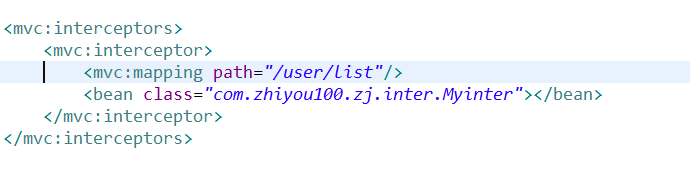
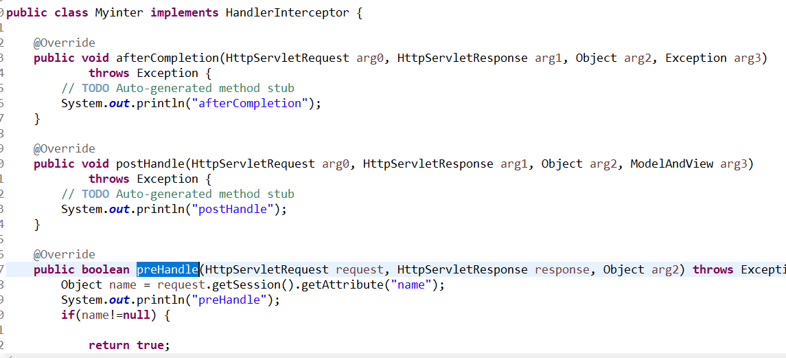

过滤器的位置是在用户提交之后，拦截器拦截的位置是在handlermapping之后，拦截器需要在springmvc的配置文件中进行配置，拦截的那些文件
一、springmvc配置

<bean class="com.zhiyou100.zj.inter.Myinter"></bean>定义的过滤器的全路径
<mvc:mapping path="/user/list"/>需要拦截的地址设置
二、类设置
实现HandlerInterceptor类，重写方法主要进行preHandle该方法进行判断，返回true放行，放回false，拦截，流程图见上一篇
